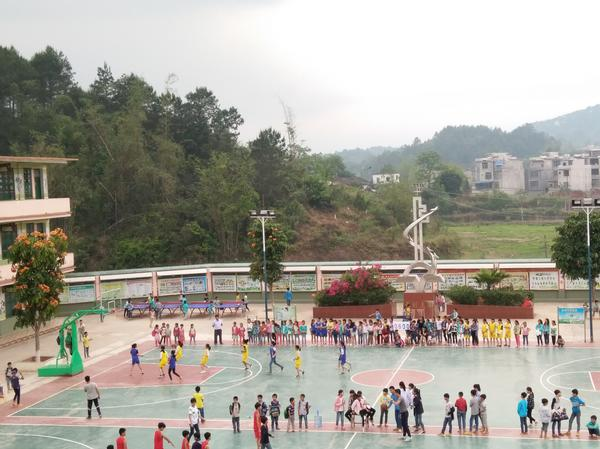
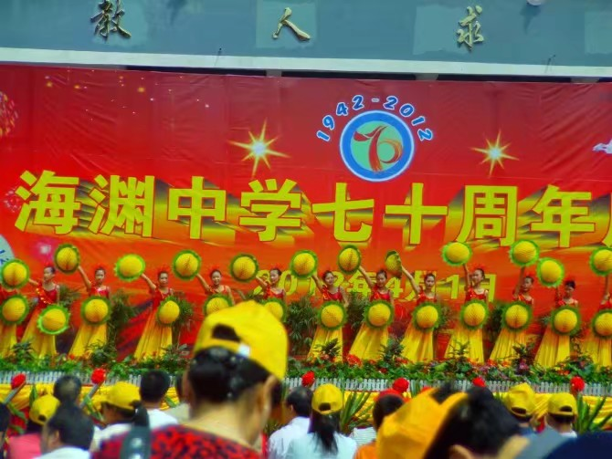
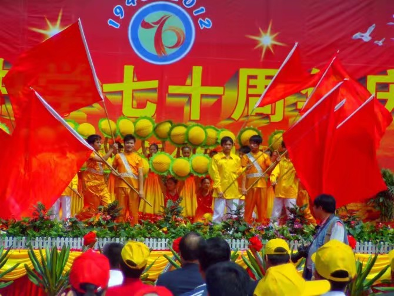
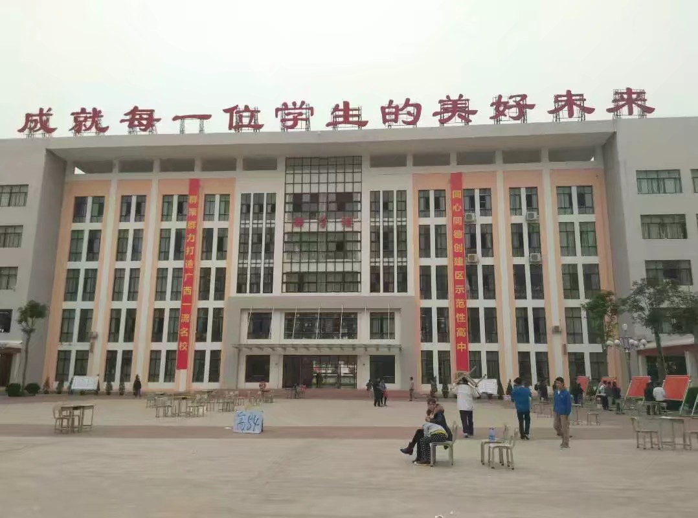
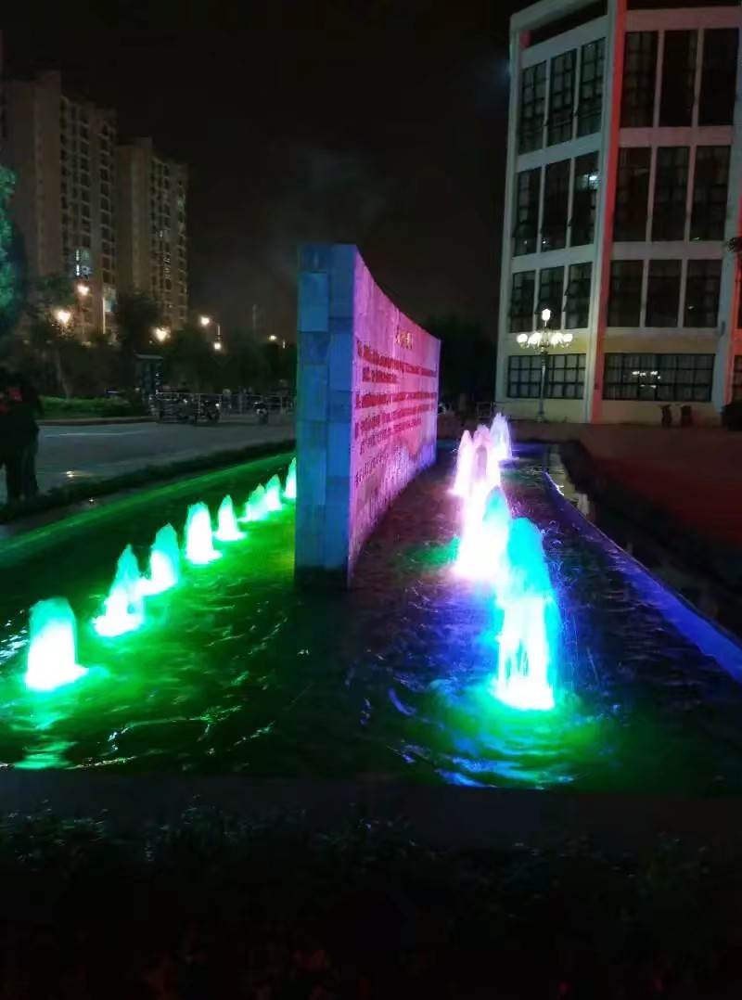

中小学学校
- 
那楠小学：宁明县那楠乡那楠小学我学校主要经营教育教学，，我学校始终坚持“德育为首、质量强校、全面育人、以人为本”的办学思想，将 “培养人、发展人、完善人”作为学校教育工作的根本，在崇左社会各界得到了充分的肯定和赞扬。
- 
- 
海渊中学：广西崇左市宁明县海渊中学是当地一所教学质量比较高的高中， 师资力量雄厚、教学设备完善。
- 
- 
广西民族师范学院附属中学：广西民族师范学院附属中学是崇左市人民政府投资兴建的一所公办中学，学校位于崇左市城南区（八大小区附近），是崇左市教育局直属 重点中学，为财政全额拨款事业单位。校园占地面积230亩，校舍面积59600平方米，总投资 1.3亿元，学校建设第一期工程已基本完成并投入使用。现建有教学楼1栋(100间教室）、实验楼1栋、办公楼1栋、科技楼1栋、学生宿舍楼8栋、学生食堂2栋、体育馆1栋，建有国家标准的400米塑胶跑道、足球场、14个篮球场、14个排球场、24个乒乓球场。学校教育教学设备齐全，设施一流，目前有87个教学班，在校生约 5000人。